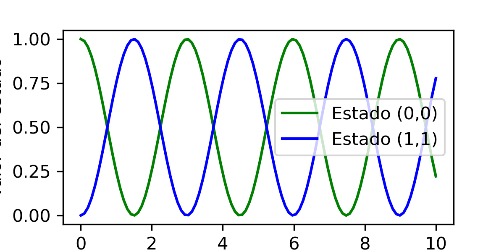

Ejemplo de como utilizar el programa
Ejemplo del uso del programa
Examples:
>>> import numpy as np
>>> from RK4 import rk4
>>> import matplotlib.pyplot as plt
>>> oOper = np.array([[0, 1], [1, 0]])
>>> yInit = np.array([[1, 0], [0, 0]])
>>> times = np.linspace(0,10,100).astype(float)
>>> stateQuant00 = np.zeros(times.size)
>>> stateQuant11 = np.zeros(times.size)
>>> h = times[1]-times[0]
>>> for tt in range(times.size):
>>> stateQuant00[tt] = yInit[0,0].real
>>> stateQuant11[tt] = yInit[1,1].real
>>> yN = rk4.rk4(rk4.dyn_generator,oOper,yInit,h)
>>> yInit = yN
>>> plt.figure(figsize=(4, 2), dpi=300)
>>> plt.plot(times, stateQuant00, label='Estado (0,0)', color='g')
>>> plt.plot(times, stateQuant11, label='Estado (1,1)', color ="b")
>>> plt.xlabel('Tiempo')
>>> plt.ylabel('Valor del estado')
>>> plt.legend()
>>> plt.show()
